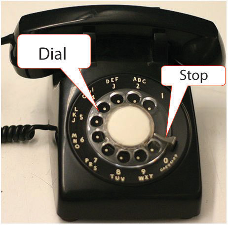

The telephone may be used for two-person synchronous communication or in a multipart conference call. Using a telephone to make long-distance and international calls involves using international telephone numbering conventions.
The telephone companies in North America use the North American numbering plan (NANP) that includes the United States, its territories, Canada, Bermuda, and sixteen Caribbean nations.
Figure 6.29 Rotary Dial Telephone
Wired telephones are connected physically to a local switch that can handle up to ten thousand connections represented by the last four-digit numbers in a telephone number from 0000 to 9999. Each switch is identified by a three-digit number such as 555. A local telephone number consists of the switch number and one of the ten thousand four-digit numbers such as 555 0112. This system can provide up to ten million different unique phone numbers,The three-digit area code plus the next four digits make up a seven-digit number. A seven-digit number has ten million possible combinations from 000 0000 to 999 9999. In practice, some area codes are reserved for special purposes such as trouble-shooting, emergencies, directory assistance, and maintenance, so the maximum is less than ten million per area code. For example, numbers 555-0100 through 555-0199 are reserved for fictional use and are not assigned to real customers. but it does not have the capacity to provide service to billions of people.
The switches are grouped into areas and assigned a group number or area code. Area codes in North America were assigned at a time when numbers were converted to a sequence of electrical pulses by inserting your finger in a rotary disc—the dial—and pulling it to a stop on a phone like the one shown in Figure 6.29 "Rotary Dial Telephone".
As a spring returns the dial to its original position, it opens and closes a set of electrical contacts to create a series of pulses that match the number dialed. Because it takes longer to dial higher numbers like 8 or 9, area codes that could be dialed quickly like 212 and 213 were assigned to densely populated areas like Manhattan (212) and Los Angeles (213). Higher numbers were assigned to rural areas or to newer areas. As a result, it is difficult to determine where a telephone is located by its area code. Do not assume that numbers with similar area codes in North America are located in the same time zone—they may be thousands of miles apart. To initiate a call to a different area code, the number 1 is dialed first. This is the national direct dialing (NDD) code for NANP members.
The IDD code for the United States is 011.
To make an international call from an NANP member such as the United States to another country, you need to provide two codes: the international direct dialing (IDD) code and the country code. The IDD code for the United States is 011. For example, if you wanted to place a call to a number in Rio de Janeiro, you would enter 011 55 21 xxx xxxx, where 011 is the IDD code for the United States, 55 is the country code for Brazil, 21 is the area code for Rio de Janeiro, and xxx xxxx represents the final seven digits of the number.
The IDD and the country code are not simply reversible. The country code for the United States is 1 (not 011).
If you traveled to Rio de Janeiro for a meeting and wanted to call back to a number in the United States from a local phone, you would have to look up the IDD code for the local service provider in Brazil. In Brazil, there is a different code for each of the five phone companies. The IDD for Brasil Telecom is 0014.
The IDD and the country code are not simply reversible. The country code for the United States is 1 (not 011), so you would enter 0014 1 xxx xxx xxxx, where the last ten digits are the area code and telephone number in the United States.
It is commonly understood in the United States that you do not enter the hyphens, parentheses, spaces, or periods that are used to make a telephone number more readable and that you dial 1 first—even though it is not included—for a call destined for a different area code. For example, if the phone number on the business card shows (555) 222-1111, you know that you would enter 2221111 if you are calling from within the 555 area codeSome area codes cover large geographic areas, and the NDD code is required to dial a number from within the same area code if they are far apart. or 15552221111 for a call from a different area code, but you would not attempt to enter the parentheses, space, or hyphen. Spaces are used in some instances in the following discussion to make the numbers easier to read in this text, but it will be understood that they are not entered when dialing the number.
Unlike those countries participating in the NANP, other countries use different numbers for the national direct dialing (NDD) code and the country code. They might use a different number of digits for the area or city code. A business card from a team member in Rio de Janeiro might be +55 (0)21-xxxx xxxx where 55 is the country code and 0 is the NDD code. To call this team member from the United States on a wired telephone, you would enter 011 55 21 xxxx xxxx, where 011 is the IDD for the United States, 55 is the country code for Brazil, and 21 is the code for Rio de Janeiro.
Notice the zero between 55 and 21 is not included when calling from outside the country. This is the NDD code that is used for calls between areas within the country. For example, if you land in the airport at Sao Paulo, Brazil, and want to call the person in Rio de Janeiro from a local phone, you would enter 0 21 xxxx xxxx (without the spaces) where 0 is the NDD code—like 1 in the United States—and 21 is the area/city code.
To place an international call to a country outside the NANP using a mobile phone, you use the plus sign (+) instead of the IDD code. For example, the number of the British Museum is +44 (0) 20 7323 8000. To call this number from a wired phone in the United States, you would dial 011 44 20 7323 8000. If you make the call from a mobile phone, you dial +44 20 7323 8000. Notice the plus sign takes the place of the IDD code.
Wired phones do not have a plus sign on their keypads, but recent model mobile phones include a method to dial a plus sign. Unfortunately, the method varies by brand of telephone.
Capture a screen that shows the links to CountryCode.org and Howtocallinternationally.com in the Project Management folder in your browser’s favorites or bookmarks and then paste it into the Ch06PhoneStudentName.doc.
| Element | Best | Adequate | Poor |
|---|---|---|---|
| File name | Ch06PhoneStudentName.doc | Ch06PhoneStudentName.docx | Different file name or incompatible format |
| Choose the correct dialing codes for making international telephone calls | Title; screen capture showing the country code and map of one of the countries other than Brazil | Same as Best | Incomplete or used Brazil |
| Identify dialing techniques used with cell phones to make international telephone calls | A screen capture from the video on how to enter a plus sign on a cell phone; a screen capture that shows the links to CountryCode.org and Howtocallinternationally.com in the Project Management folder in the favorites or bookmarks | Same as Best | Cell phone screen capture does not show a plus sign or shows only one of the two required sites in the bookmarks folder |
Selecting the appropriate numbers to use from a business card for placing an international call requires practice. In this exercise, you practice using your knowledge of international calling codes to compare your answers to reference answers that are hidden on a spreadsheet.
Notice that if you type and enter the correct answer, in exactly the format indicated, the cell background turns green, as shown in Figure 6.30 "Background Turns Green If Correct".
Select columns C through E. To accomplish this, you may click and drag the column headings from C through E, or you can click the column C heading, hold the Shift key, and click the column E heading. Columns C, D, and E are selected, even though column D is hidden, as shown in Figure 6.31 "Columns C, D, and E Selected".
Save the spreadsheet. Check your work to assure that it is complete using the following table:
| Element | Best | Adequate | Poor |
|---|---|---|---|
| File name | Ch06PhonePracticeStudentName.xls | Ch06PhonePracticeStudentName.xlsx | Different file name or incompatible format |
| Select the appropriate times and methods for making international calls | All incorrect answers are analyzed; the cause of the error correctly identified | All correct | Analysis does not correctly identify the cause of the error |
Some projects are directly affected by external factors such as political elections, economic trends, corporate mergers, technological or scientific breakthroughs, or weather. To keep informed about these factors, you can subscribe to online news sources. A method that facilitates this process is Really Simple Syndication (RSS). To use this service, you need a newsreader so you can subscribe to RSS feeds. For this activity, you need a Google account. If you do not have one, go to Google.com and create one for no cost.